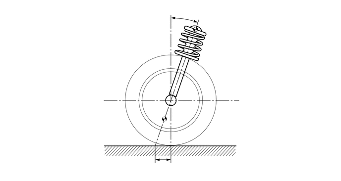

NM3140CG
_53
悬架
_024725
前悬架
_0118406
前悬架系统
GE
概述
F
前悬架 前悬架系统 概述 概述
概要
a.
采用麦弗逊滑柱式独立悬架。
b.
通过优化悬架结构，实现了卓越的行驶稳定性和乘坐舒适性。
0.844,0.885 1.021,0.885
1.021,0.885 1.74,1.208
true
0.531,1.74 0.76,1.74
0.76,1.74 1.958,1.938
true
0.656,4.083 0.885,4.083
0.885,4.083 2.167,3.521
true
2.135,4.344 2.365,4.344
2.365,4.344 3.646,3.781
true
2.604,4.865 2.833,4.865
2.833,4.865 4.115,4.302
true
4.917,2.271 5.656,1.177
5.656,1.177 5.854,1.177
true
4.906,3.396 6.313,2.604
6.313,2.604 6.51,2.604
true
0.667,0.823 0.833,1.01
0.167,0.188
10
false
*1
0.365,1.667 0.583,1.865
0.219,0.198
10
false
*2
0.5,4.01 0.74,4.177
0.24,0.167
10
false
*3
1.938,4.26 2.167,4.458
0.229,0.198
10
false
*4
2.438,4.771 2.646,4.948
0.208,0.177
10
false
*5
5.906,1.094 6.219,1.25
0.313,0.156
10
false
*6
6.583,2.521 6.896,2.677
0.313,0.156
10
false
*7
| *1 | 前螺旋弹簧 | *2 | 前稳定杆连杆总成 |
| *3 | 前悬架 1 号下臂分总成 | *4 | 前稳定杆 |
| *5 | 悬架横梁（前悬架横梁分总成） | *6 | 前悬架支座分总成 |
| *7 | 前减振器总成 | - | - |
主要特征
a.
优化的后倾角
i.
优化的后倾角和拖距值有利于实现由低速至高速范围行驶过程中的直线行驶稳定性，并能确保高速行驶时的辅助转向响应性。

1.833,2.5 3.417,2.5
true
3.854,1.333 4.833,1.333
true
3.813,0.208 4.125,0.365
0.313,0.156
10
*a
3.354,3.406 3.667,3.563
0.313,0.156
10
*b
4.885,1.24 5.198,1.396
0.313,0.156
10
*c
1.656,2.406 1.969,2.563
0.313,0.156
10
*d
| *a | 后倾角 | *b | 拖距值 |
| *c | 主销轴线 | *d | 下球节支点 |
b.
优化的外倾角
i.
前悬架采用了负外倾角，减小了转向（转弯）时由于车辆姿势改变而形成的外侧车轮触地外倾角，从而实现了卓越的转弯性能。
0.417,0.25 3.417,2.583
3,2.333
3.75,0.25 6.75,2.583
3,2.333
2.698,1.667 2.917,1.5
2.917,1.5 3.167,1.5
true
0.49,0.281 0.802,0.438
0.313,0.156
10
*a
3.823,0.281 4.135,0.438
0.313,0.156
10
*b
3.198,1.417 3.51,1.573
0.313,0.156
10
*c
| *a | 直线 | *b | 转向 |
| *c | 负外倾角 | - | - |
c.
优化的主销偏置
i.
采用较小的主销偏置，减小了主销轴线周围产生的力矩，从而实现了制动期间卓越的车辆稳定性。 制动等期间将力施加至车轮时，力施加在轮胎触地中心点和主销偏置处。 经过主销偏置放大的力试图转动主销轴线。 这样，主销偏置减小，进而在主销轴线处产生较小的力矩，从而在制动期间提供卓越的车辆稳定性。
0.25,0.167 3.417,3.5
3.167,3.333
3.75,0.167 6.917,3.5
3.167,3.333
1.448,0.344 2.031,0.344
true
2.167,0.917 2.75,0.917
true
1.24,2.833 1.99,2.833
1.99,2.833 2.135,2.927
true
5.74,1.885 6.135,1.469
6.135,1.469 6.365,1.469
true
0.354,0.25 0.667,0.406
0.313,0.156
10
*a
3.854,0.26 4.167,0.417
0.313,0.156
10
*b
2.083,0.25 2.396,0.406
0.313,0.156
10
*c
2.802,0.823 3.115,0.979
0.313,0.156
10
*d
1.063,2.729 1.375,2.885
0.313,0.156
10
*e
5.698,3.115 6.01,3.271
0.313,0.156
10
*f
6.417,1.375 6.729,1.531
0.313,0.156
10
*e
2.5,3.229 2.813,3.385
0.313,0.156
10
*f
| *a | 后视图 | *b | 俯视图 |
| *c | 主销轴线 | *d | 轮胎触地中心 |
| *e | 轮胎触地中心点 | *f | 主销偏置 |

|
力 | - | - |